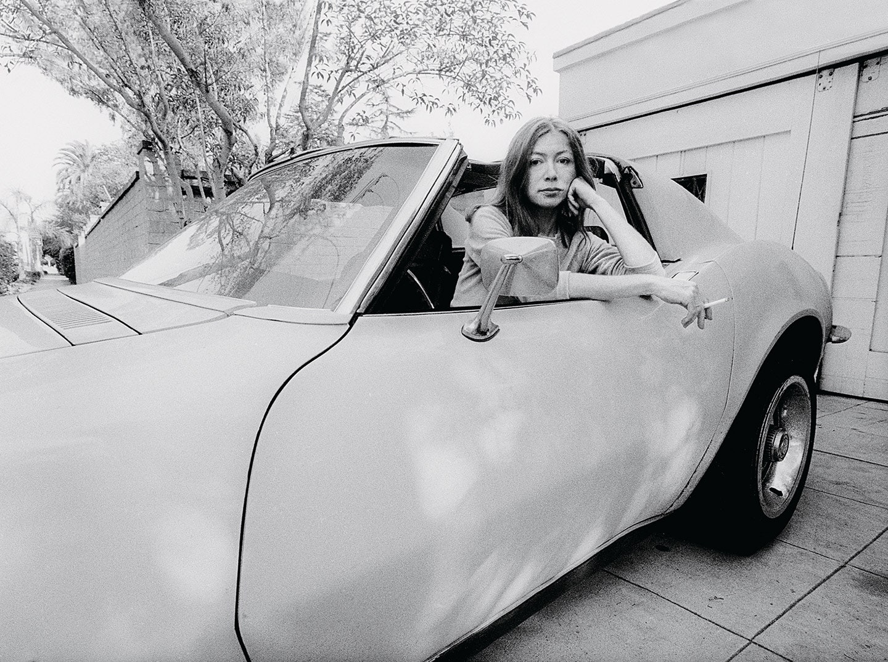
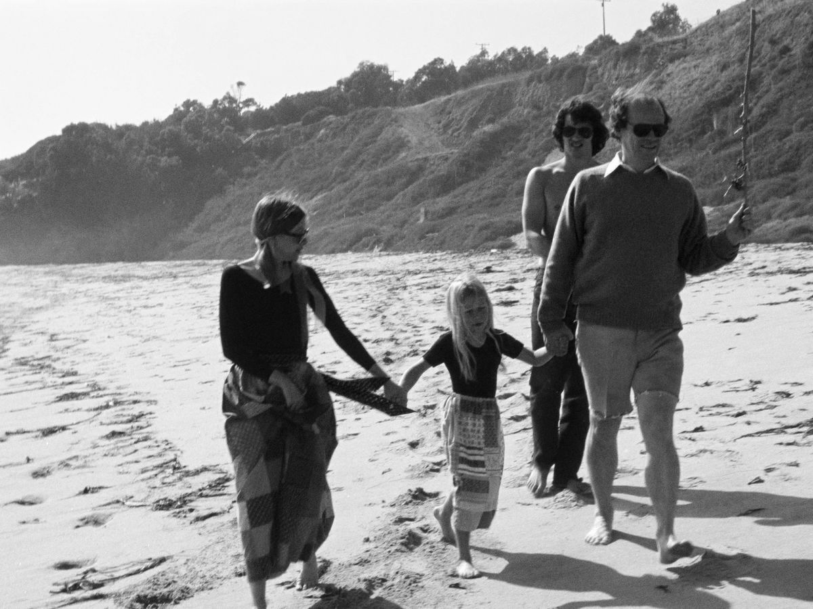

This is a story about love and death in the golden land.
The future always looks good in the golden land, because no one remembers the past.

A good part of any day in Los Angeles is spent driving, alone, through streets devoid of meaning to the driver, which is one reason the place exhilarates some people, and floods others with an amorphous unease. There is about these hours spent in transit a seductive unconnectedness.
Los Angeles weather is the weather of catastrophe, of apocalypse… the unpredictability of the Santa Ana affect the entire quality of life in Los Angeles, accentuate its impermanence, its unreliability. The wind shows us how close to the edge we are.
Once she was born, I was never not afraid

A place belongs forever to whoever claims it hardest, remembers it most obsessively, wrenches it from itself, shapes it, renders it, loves it so radically that he remakes it in his own image.